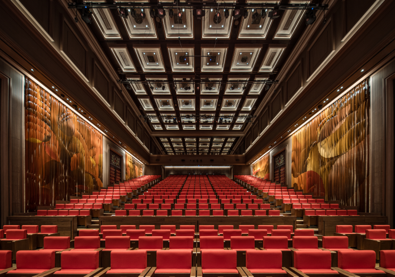
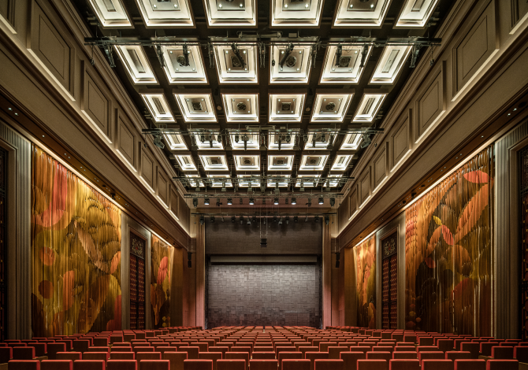
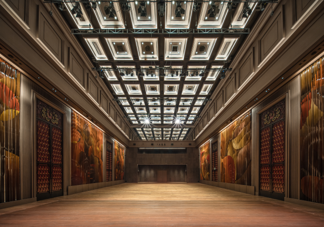
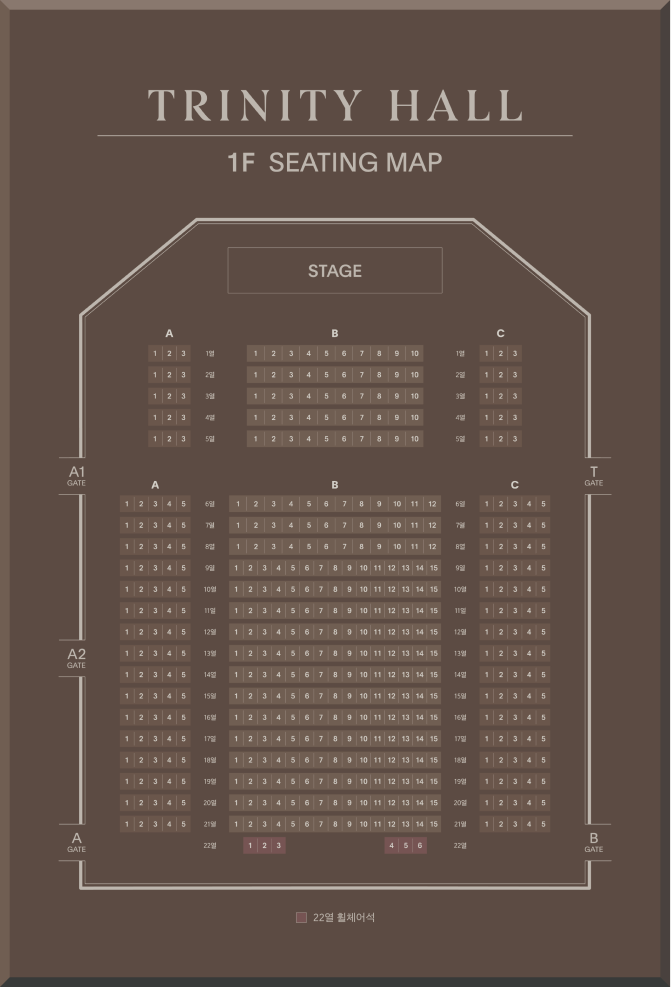
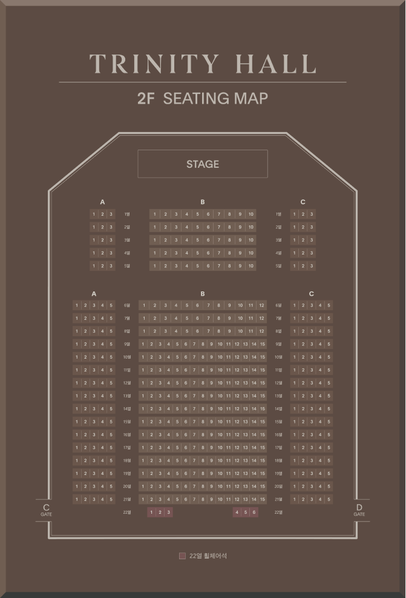

객석안내
SEQUENCE
트리니티홀은 2개의 무대 리프트와 21열의 객석
리프트를 활용한 가변형 객석으로자유로운 공간 연출이
가능합니다.
뒤로 갈수록 높아지는 경사형, 전체 좌석의 높이가
동일한 플랫형, 좌석을 없앤 홀 형태의 히든형까지
3가지 형태로 공간을 연출할 수 있습니다.
이를 통해 공연뿐 아니라 강연, 콘퍼런스, 세미나, 쇼,
전시, 프로모션 등다양한 기획과 연출 의도를 충족시킬
수 있습니다.
또한 국내 최고 사양의 LED 스크린과 3D 입체 음향을
활용하여 시네마 콘텐츠 구현까지 가능한 진정한
의미의 다목적홀입니다.
-

경사형 객석세 가지의 기본 변형 외에 기획의도에 따라 다양한 경사 포맷으로 커스터마이징이 가능합니다.
리사이틀부터 40인조 오케스트라까지 클래식 공연과 콘서트, 강연, LED 스크린을 활용한 시네마 콘텐츠 등에 적합합니다. - STAGE 23평 / 30평 / 34평
- CAPACITY 최대 455석
-

플랫형 객석세 가지의 기본 변형 외에 기획의도에 따라 다양한 플랫 포맷으로 커스터마이징이 가능합니다.
컨퍼런스, 세미나 등 비즈니스 용도로 활용하기 적합합니다. 또한 중앙 통로를 비워 두어 패션쇼 등과 같은 이벤트에 활용하기 좋습니다. - STAGE 23평 / 30평 / 34평
- CAPACITY 최대 455석
-

히든형 객석객석을 모두 없애 전시와 박람회 등을 진행하실 수 있으며, 145평의 넓은 오케스트라 리허설 및 녹음 공간으로 활용할 수 있습니다. 연회용 테이블을 배치하여 식사와 함께 공연을 즐기기에도 적합합니다.
- STAGE 최대 145평
- CAPACITY 최대 200석 (원형테이블)
소극장
- 관람석총 2,283석
- 일반판매석290석
- 관람석290석
2200여 개의 객석을 갖춘 트리니티홀의 대표 극장입니다.
1993년 처음 관객을 맞은 오페라극장은 프로시니엄 아치형 무대와 고전적 말굽형 구조에 현대적 감각의 객석이 조화를 이루는 행사장으로 국내 최초의 오페라, 발레 전용극장이다. 2008년 리노베이션을 거쳐 현재의 2,340석 규모로 재개관하였다.
자세히보기콘서트홀
- 관람석총 2,283석
- 일반판매석290석
- 관람석290석
2200여 개의 객석을 갖춘 트리니티홀의 대표 극장입니다.
1993년 처음 관객을 맞은 오페라극장은 프로시니엄 아치형 무대와 고전적 말굽형 구조에 현대적 감각의 객석이 조화를 이루는 행사장으로 국내 최초의 오페라, 발레 전용극장이다. 2008년 리노베이션을 거쳐 현재의 2,340석 규모로 재개관하였다.
자세히보기
